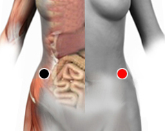

Obesidad
cresta ilíaca anterosuperior - cresta iliaca anterosuperior
tiroides - duodeno
tiroides - escápula
tiroides - timo
tiroides - pómulo
estómago - bazo
páncreas - hígado
vejiga - cresta iliaca

Generalidades:
El sobrepeso y la obesidad se definen como una acumulación anormal o excesiva de tejido graso que incrementa el riesgo de padecer muchas otras enfermedades.
El índice de masa corporal (IMC) es un indicador simple de la relación entre el peso y la talla (altura) que se utiliza frecuentemente para identificar el sobrepeso y la obesidad en los adultos. Se calcula dividiendo el peso de una persona en kilos por el cuadrado de su talla en metros (kg/m 2 ).
Pares relacionados
Los pares del biomagnetismo relacionados con este trastorno son: Adenovirus 36, Gula (Iván), Elena, Ramsés, Disfunción de la tiroides, Diabetes falsa, Tripanosoma gambi, Clostridium perfringes.
La Organización Mundial de la Salud define los siguientes parámetros:
El IMC proporciona la medida más útil del sobrepeso y la obesidad en la población, puesto que es la misma para ambos sexos y para los adultos de todas las edades. Sin embargo, hay que considerarla a título indicativo porque es posible que no se corresponda con el mismo nivel de grosor en diferentes personas.
La obesidad mórbida es cuando la vida de la persona se pone en peligro por el exceso de grasa.
Algunas de las enfermedades relacionadas con la obesidad pueden ser: cáncer, diabetes, y problemas cardiovasculares como hipercolesterolemia, hipertensión arterial y mayor propensión a sufrir un infarto. Sin embargo estas son solo las más importantes dentro de una larga lista de trastornos ocasionados por la obesidad, como trastornos al aparato locomotar (artículaciones, osteoartritis...) o al sistema nervioso.
Una dieta equilibrada, reduciendo el número de calorías y grasas, asi como hacer ejercicio regularmente son las medidas más recomendables.